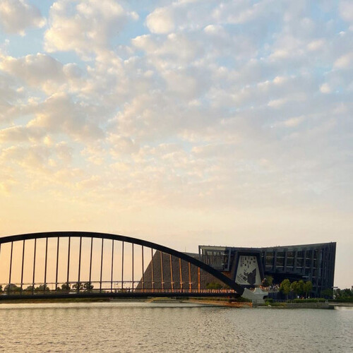
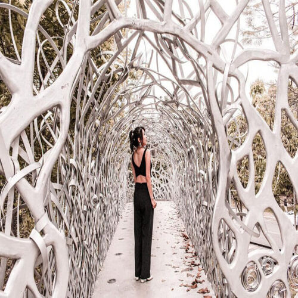
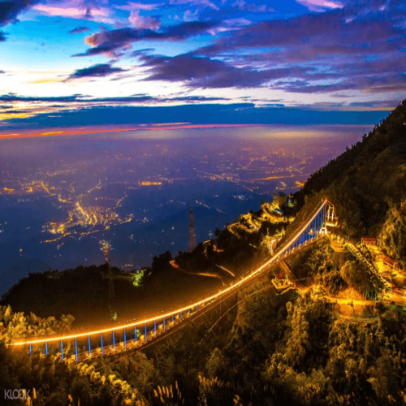

首頁
最新消息
相關行程
嘉義好喝的
嘉義好吃的
嘉義景點
聯絡我們
Search
嘉義在地人推的景點及美食
不知道嘉義有甚麼可以逛嗎
我想參加
嘉義人推薦

故宮南院位於嘉義縣太保市， 定位和故宮台北院區不同，主要定位為亞洲博物館。 而吸引遊客前往故宮南院的理由，除了館內的豐富文物、 多元展覽之外，就是園區內南側的至善湖與北側的至德湖， 一大片壯闊湖景，非常適合假日到這裡走走。另外， 在2020年11月故宮南院邀請了國內外九位藝術家共同打造的戶外美術館正式開幕啦！ 園區內有許多美麗的藝術造景，趕快來故宮南院走走吧！
FUNTIME

蘭潭是嘉義市自來水的水庫，潭水清澈見底，所以到了晚上可能會遇見「蘭潭泛月」的美景！ 而「月影潭心」為這幾年剛建好的新造景，位於蘭潭風景區，由鋁片簍空編織而成，造型就像鳥巢構築在潭水之上般， 到了晚上還會有不同的光影變化，十分浪漫～另外也有音樂水舞噴泉喔！
FUNTIME

太平雲梯於2017年正式啟用，曾經是全台最長的景觀吊橋，位於海拔一千公尺處（抖～）， 可以在這裡欣賞極美的雲海、晚霞，天氣好的時候還可以眺望嘉義市呢！晚上這一座橋還會有燈光秀， 每天有不同的色彩輪流照亮這座美麗的吊橋。
FUNTIME
崔.GO - 嘉義最好玩最好吃行程的Email List
讓我們有最新行程立刻通知你！
提交